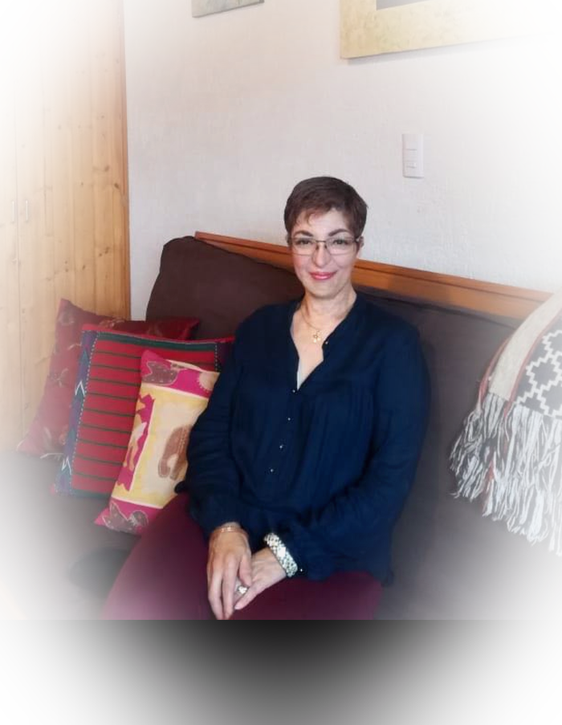

Terapia Holográfica · Resonance Repatterning®
Transforma los patrones que limitan tu bienestar y recupera tu esencia.
Sesiones de Holographic Repatterning® para tu bienestar emocional, mental y espiritual — en español, para cualquier parte del mundo.

Empecemos por aquí
¿Te identificas con alguno de estos desafíos?
Ansiedad
Miedo indefinido al futuro, pensamientos anticipatorios y dificultad para encontrar calma.
Estrés
La sensación de estar siempre a un paso de desbordarte.
Duelo
Una pérdida que pesa distinto con el tiempo y que puede traer resistencia a los cambios.
Relaciones conflictivas
Patrones que se repiten en la pareja, la familia o el trabajo y terminan generando desgaste o daño emocional.
Bloqueos emocionales
Situaciones en las que sabes qué hacer, pero algo te detiene; emociones como resentimiento, envidia o dolor que no logras soltar.
Autoestima
Cuando tu autoimagen se devalúa o se exagera, aparece la falta de merecimiento y una voz interna que exige más de lo que da tregua.
Falta de propósito
Avanzar en piloto automático, sentir vacío o percibir que nada tiene sentido.
Depresión
Desánimo persistente, pérdida de entusiasmo o alegría, falta de energía y dificultad para iniciar o sostener actividades.
Conductas adictivas
Conductas que, aunque generan daño, se repiten en busca de alivio, calma o una sensación momentánea de paz.
Trauma
Heridas psicológicas y emocionales que permanecen sin procesarse, especialmente cuando han sido vividas desde la soledad o la vulnerabilidad.
Enfermedades crónicas
Acompañamiento para transitar una condición crónica con dignidad, aceptación y sentido dentro del contexto de tu vida.
Transiciones
Manejo del estrés y de las emociones que acompañan los cambios profundos de vida.
Un método, no una creencia
Qué es Holographic Repatterning®
La Terapia Holográfica plantea que todo está formado por energía y que nuestro cuerpo funciona mejor cuando esa energía se encuentra en equilibrio. También considera que nuestros hábitos, emociones y entorno pueden influir en la manera en que se expresa nuestro bienestar.
Desde este enfoque, cada célula del cuerpo tiene una frecuencia energética y se comunica con las demás. Cuando esa comunicación es armoniosa —lo que se conoce como coherencia— puede favorecerse una sensación de bienestar físico, mental y emocional. Cuando se altera, pueden manifestarse molestias, bloqueos o conflictos emocionales.
La Terapia Holográfica busca identificar desequilibrios o bloqueos en el sistema de una persona y acompañar su transformación, con el propósito de liberar patrones negativos repetitivos y favorecer un mayor bienestar.
En general, este enfoque integra ideas de la física moderna, tradiciones antiguas y sistemas energéticos del cuerpo para comprender cómo influyen en la salud, el bienestar y la enfermedad.
La ecología de la que resultamos —ancestros, época, lugar de desarrollo y experiencias vividas—, así como la ecología que formamos en nuestra vida actual, también puede influir en la manera en que nos relacionamos con nosotros mismos, con los demás y con nuestro entorno.
El proceso
Cómo funciona una sesión
Conversación inicial
Una llamada breve, sin costo, para resolver tus dudas sobre el proceso.
Sesión de repatterning
Por videollamada o de forma presencial, identificamos y trabajamos el patrón que está detrás del malestar, integrando nuevas formas de experimentar tu vida.
Integración y seguimiento
Seguimiento y acompañamiento gratuito vía WhatsApp entre sesiones.
Sobre Lilian
Lilian Altamirano Sánchez
Llevo más de 20 años acompañando procesos de transformación personal como facilitadora certificada en Holographic Repatterning®, con formación avalada por el Instituto de Holographic Repatterning® y la Asociación Educativa de Transformación de Patrones Holográficos, A.C.
He acompañado a personas hispanohablantes de México y otros países en procesos de ansiedad, duelo, relaciones difíciles y bloqueos que no lograban resolver solas.
- Facilitadora certificada en Holographic Repatterning® (HR)
- Asociación Educativa de Transformación de Patrones Holográficos, A.C.
- +20 años de experiencia clínica en español
Más de dos décadas de estudio y acompañamiento
Formación y trayectoria
A lo largo de su trayectoria, Lilian ha complementado su formación en Holographic Repatterning® y Resonance Repatterning® con estudios en distintas herramientas de acompañamiento humano, emocional y sistémico.
Su formación incluye diplomados, certificaciones, cursos y talleres realizados a lo largo de más de dos décadas, con un proceso continuo de actualización profesional.
-
2002
Facilitadora certificada en Holographic Repatterning® y Resonance Repatterning®
The Holographic Repatterning® Association · R.R. Asociación Educativa, A.C.
-
2006
Diplomado en Tanatología
Escuela de Enfermería del ISSSTE, A.C. · UNAM, Facultad de Estudios Superiores Zaragoza
-
2013
Diplomado en Sistemas Familiares y Organizacionales
Universidad Tecnológica de Terapias Profesionales
-
2015–2016
Formación en Descodificación Biológica México
Consciencia Genosomática
-
2017
Psicogenealogía Integrativa
Consciencia Genosomática
-
2021
Actualización en Trauma del Desarrollo, EMDR y Psicotraumatología
Newman Institute
Formación y certificaciones
Documentos originales de cada formación. Haz clic en cualquiera para verlo en detalle.
Historias reales
Personas que han vivido el proceso
Cada experiencia es distinta. Estas son algunas voces de personas que han trabajado con Lilian a través de Terapia Holográfica y Resonance Repatterning®.
1–2 de 14
Los testimonios reflejan experiencias personales. Cada proceso es único y los resultados pueden variar.
Antes de agendar
Preguntas frecuentes
¿Esto reemplaza una terapia psicológica, médica o psiquiátrica?
No. Es un acompañamiento complementario que puede integrarse con un tratamiento médico, psicológico o psiquiátrico, sin sustituirlo.
¿Qué diferencia hay entre Holographic Repatterning y Resonance Repatterning®?
Son el mismo método. El cambio de nombre busca hacerlo más claro y comprensible para las personas que se acercan por primera vez a este enfoque.
¿Cuántas sesiones voy a necesitar?
Depende de tu proceso. En la primera conversación te propongo un plan realista según lo que traigas.
¿Las sesiones pueden ser online o presenciales?
Sí. Las sesiones pueden realizarse por videollamada o de forma presencial, según disponibilidad y ubicación.
¿Atienden a personas fuera de México?
Sí. Trabajo con personas hispanohablantes en cualquier parte del mundo.
Da el primer paso
Agenda una primera conversación
Cuéntame brevemente qué te trae hasta aquí. Te responderé personalmente para coordinar una primera conversación de acompañamiento, gratuita y con una duración máxima de 30 minutos.